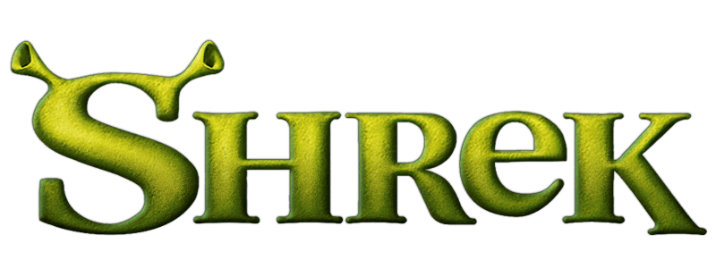

From Swamp to Screen: The Shrek Legacy
"Shrek," released in 2001, is an animated comedy film that introduces audiences to the adventures of Shrek, an ogre who just wants to live a peaceful life in his swamp. However, his solitude is disrupted when his swamp is overrun by fairy tale creatures banished by the tyrannical Lord Farquaad. In an attempt to reclaim his home, Shrek strikes a deal with Farquaad to rescue Princess Fiona from a tower guarded by a dragon. What follows is a hilarious and heartwarming journey filled with quirky characters, humor, and, ultimately, a lesson about the true meaning of love and friendship. This film, with its witty script and memorable characters, became a beloved classic and marked the beginning of a successful animated franchise.